3. Writing XML Input Files¶
Unlike many other Monte Carlo codes which use an arbitrary-format ASCII file with “cards” to specify a particular geometry, materials, and associated run settings, the input files for OpenMC are structured in a set of XML files. XML, which stands for eXtensible Markup Language, is a simple format that allows data to be exchanged efficiently between different programs and interfaces.
Anyone who has ever seen webpages written in HTML will be familiar with the structure of XML whereby “tags” enclosed in angle brackets denote that a particular piece of data will follow. Let us examine the follow example:
<person>
<firstname>John</firstname>
<lastname>Smith</lastname>
<age>27</age>
<occupation>Health Physicist</occupation>
</person>
Here we see that the first tag indicates that the following data will describe a person. The nested tags firstname, lastname, age, and occupation indicate characteristics about the person being described.
In much the same way, OpenMC input uses XML tags to describe the geometry, the materials, and settings for a Monte Carlo simulation.
3.1. Overview of Files¶
To assemble a complete model for OpenMC, one needs to create separate XML files for the geometry, materials, and settings. Additionally, there are three optional input files. The first is a tallies XML file that specifies physical quantities to be tallied. The second is a plots XML file that specifies regions of geometry which should be plotted. The third is a CMFD XML file that specifies coarse mesh acceleration geometry and execution parameters. OpenMC expects that these files are called:
- geometry.xml
- materials.xml
- settings.xml
- tallies.xml
- plots.xml
- cmfd.xml
3.2. Settings Specification – settings.xml¶
All simulation parameters and miscellaneous options are specified in the settings.xml file.
3.2.1. <confidence_intervals> Element¶
The <confidence_intervals> element has no attributes and has an accepted value of “true” or “false”. If set to “true”, uncertainties on tally results will be reported as the half-width of the 95% two-sided confidence interval. If set to “false”, uncertainties on tally results will be reported as the sample standard deviation.
Default: false
3.2.2. <cross_sections> Element¶
The <cross_sections> element has no attributes and simply indicates the path to an XML cross section listing file (usually named cross_sections.xml). If this element is absent from the settings.xml file, the CROSS_SECTIONS environment variable will be used to find the path to the XML cross section listing.
3.2.3. <cutoff> Element¶
The <cutoff> element indicates the weight cutoff used below which particles undergo Russian roulette. Surviving particles are assigned a user-determined weight. Note that weight cutoffs and Russian rouletting are not turned on by default. This element has the following attributes/sub-elements:
weight: The weight below which particles undergo Russian roulette.
Default: 0.25
weight_avg: The weight that is assigned to particles that are not killed after Russian roulette.
Default: 1.0
3.2.4. <eigenvalue> Element¶
The <eigenvalue> element indicates that a  -eigenvalue calculation
should be performed. It has the following attributes/sub-elements:
-eigenvalue calculation
should be performed. It has the following attributes/sub-elements:
batches: The total number of batches, where each batch corresponds to multiple fission source iterations. Batching is done to eliminate correlation between realizations of random variables.
Default: None
generations_per_batch: The number of total fission source iterations per batch.
Default: 1
inactive: The number of inactive batches. In general, the starting cycles in a criticality calculation can not be used to contribute to tallies since the fission source distribution and eigenvalue are generally not converged immediately.
Default: None
particles: The number of neutrons to simulate per fission source iteration.
Default: None
3.2.5. <energy_grid> Element¶
The <energy_grid> element determines the treatment of the energy grid during a simulation. Setting this element to “nuclide” will cause OpenMC to use a nuclide’s energy grid when determining what points to interpolate between for determining cross sections (i.e. non-unionized energy grid). To use a unionized energy grid, set this element to “union”. Note that the unionized energy grid treatment is slightly different than that employed in Serpent.
Default: union
3.2.6. <entropy> Element¶
The <entropy> element describes a mesh that is used for calculating Shannon entropy. This mesh should cover all possible fissionable materials in the problem. It has the following attributes/sub-elements:
dimension: The number of mesh cells in the x, y, and z directions, respectively.
- Default: If this tag is not present, the number of mesh cells is
automatically determined by the code.
lower_left: The Cartesian coordinates of the lower-left corner of the mesh.
Default: None
upper_right: The Cartesian coordinates of the upper-right corner of the mesh.
Default: None
3.2.7. <fixed_source> Element¶
The <fixed_source> element indicates that a fixed source calculation should be performed. It has the following attributes/sub-elements:
batches: The total number of batches. For fixed source calculations, each batch represents a realization of random variables for tallies.
Default: None
particles: The number of particles to simulate per batch.
Default: None
3.2.8. <no_reduce> Element¶
The <no_reduce> element has no attributes and has an accepted value of “true” or “false”. If set to “true”, all user-defined tallies and global tallies will not be reduced across processors in a parallel calculation. This means that the accumulate score in one batch on a single processor is considered as an independent realization for the tally random variable. For a problem with large tally data, this option can significantly improve the parallel efficiency.
Default: false
3.2.9. <output> Element¶
The <output> element determines what output files should be written to disk during the run. The sub-elements are described below, where “true” will write out the file and “false” will not.
cross_sections: Writes out an ASCII summary file of the cross sections that were read in.
Default: false
summary: Writes out an ASCII summary file describing all of the user input files that were read in.
Default: false
tallies: Write out an ASCII file of tally results.
Default: true
Note
The tally results will always be written to a binary/HDF5 state point file.
3.2.10. <output_path> Element¶
The <output_path> element specifies an absolute or relative path where all output files should be written to. The specified path must exist or else OpenMC will abort.
Default: Current working directory
3.2.11. <ptables> Element¶
The <ptables> element determines whether probability tables should be used in the unresolved resonance range if available. This element has no attributes or sub-elements and can be set to either “false” or “true”.
Default: true
3.2.12. <run_cmfd> Element¶
The <run_cmfd> element indicates whether or not CMFD acceleration should be turned on or off. This element has no attributes or sub-elements and can be set to either “false” or “true”.
Defualt: false
3.2.13. <seed> Element¶
The seed element is used to set the seed used for the linear congruential pseudo-random number generator.
Default: 1
3.2.14. <source> Element¶
The source element gives information on an external source distribution to be used either as the source for a fixed source calculation or the initial source guess for criticality calculations. It takes the following attributes/sub-elements:
file: If this attribute is given, it indicates that the source is to be read from a binary source file whose path is given by the value of this element. Note, the number of source sites needs to be the same as the number of particles simulated in a fission source generation.
Default: None
space: An element specifying the spatial distribution of source sites. This element has the following attributes:
type: The type of spatial distribution. Valid options are “box” and “point”. A “box” spatial distribution has coordinates sampled uniformly in a parallelepiped. A “point” spatial distribution has coordinates specified by a triplet.
Default: None
parameters: For a “box” spatial distribution, parameters should be given as six real numbers, the first three of which specify the lower-left corner of a parallelepiped and the last three of which specify the upper-right corner. Source sites are sampled uniformly through that parallelepiped.
For a “point” spatial distribution, parameters should be given as three real numbers which specify the (x,y,z) location of an isotropic point source
Default: None
angle: An element specifying the angular distribution of source sites. This element has the following attributes:
type: The type of angular distribution. Valid options are “isotropic” and “monodirectional”. The angle of the particle emitted from a source site is isotropic if the “isotropic” option is given. The angle of the particle emitted from a source site is the direction specified in the <parameters> attribute if “monodirectional” option is given.
Default: isotropic
parameters: For an “isotropic” angular distribution, parameters should not be specified
For a “monodirectional” angular distribution, parameters should be given as three real numbers which specify the angular cosines with respect to each axis.
Default: None
energy: An element specifying the energy distribution of source sites. This element has the following attributes:
type: The type of energy distribution. Valid options are “monoenergetic”, “watt”, and “maxwell”. The “monoenergetic” option produces source sites at a single energy. The “watt” option produces source sites whose energy is sampled from a Watt fission spectrum. The “maxwell” option produce source sites whose energy is sampled from a Maxwell fission spectrum
Default: watt
parameters: For a “monoenergetic” energy distribution, parameters should be given as the energy in MeV of the source sites.
For a “watt” energy distribution, parameters should be given as two real numbers
and
that parameterize the distribution 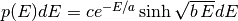.
For a “maxwell” energy distribution, parameters should be given as one real number
Default: 0.988 2.249
3.2.15. <state_point> Element¶
The <state_point> element indicates at what batches a state point file should be written. A state point file can be used to restart a run or to get tally results at any batch. The default behavior when using this tag is to write out the source bank in the state_point file. This behavior can be customized by using the <source_point> element. This element has the following attributes/sub-elements:
batches: A list of integers separated by spaces indicating at what batches a state point file should be written.
Default: Last batch only
interval: A single integer indicating that a state point should be written every batches. This option can be given in lieu of listing batches explicitly.
Default: None
3.2.16. <source_point> Element¶
The <source_point> element indicates at what batches the source bank should be written. The source bank can be either written out within a state point file or separately in a source point file. This element has the following attributes/sub-elements:
batches: A list of integers separated by spaces indicating at what batches a state point file should be written. It should be noted that if source_separate tag is not set to “true”, this list must be a subset of state point batches.
Default: Last batch only
interval: A single integer indicating that a state point should be written every batches. This option can be given in lieu of listing batches explicitly. It should be noted that if source_separate tag is not set to “true”, this value should produce a list of batches that is a subset of state point batches.
Default: None
source_separate: If this element is set to “true”, a separate binary source point file will be written. Otherwise, the source sites will be written in the state point directly.
Default: false
source_write: If this element is set to “false”, source sites are not written to the state point or source point file. This can substantially reduce the size of state points if large numbers of particles per batch are used.
Default: true
overwrite_latest: If this element is set to “true”, a source point file containing the source bank will be written out to a separate file named source.binary or source.h5 depending on if HDF5 is enabled. This file will be overwritten at every single batch so that the latest source bank will be available. It should be noted that a user can set both this element to “true” and specify batches to write a permanent source bank.
Default: false
3.2.17. <survival_biasing> Element¶
The <survival_biasing> element has no attributes and has an accepted value of “true” or “false”. If set to “true”, this option will enable the use of survival biasing, otherwise known as implicit capture or absorption.
Default: false
3.2.18. <threads> Element¶
The <threads> element indicates the number of OpenMP threads to be used for a simulation. It has no attributes and accepts a positive integer value.
Default: None (Determined by environment variable OMP_NUM_THREADS)
3.2.19. <trace> Element¶
The <trace> element can be used to print out detailed information about a single particle during a simulation. This element should be followed by three integers: the batch number, generation number, and particle number.
Default: None
3.2.20. <track> Element¶
The <track> element specifies particles for which OpenMC will output binary files describing particle position at every step of its transport. This element should be followed by triplets of integers. Each triplet describes one particle. The integers in each triplet specify the batch number, generation number, and particle number, respectively.
Default: None
3.2.21. <uniform_fs> Element¶
The <uniform_fs> element describes a mesh that is used for re-weighting source sites at every generation based on the uniform fission site methodology described in Kelly et al., “MC21 Analysis of the Nuclear Energy Agency Monte Carlo Performance Benchmark Problem,” Proceedings of Physor 2012, Knoxville, TN (2012). This mesh should cover all possible fissionable materials in the problem. It has the following attributes/sub-elements:
dimension: The number of mesh cells in the x, y, and z directions, respectively.
Default: None
lower_left: The Cartesian coordinates of the lower-left corner of the mesh.
Default: None
upper_right: The Cartesian coordinates of the upper-right corner of the mesh.
Default: None
3.2.22. <verbosity> Element¶
The <verbosity> element tells the code how much information to display to the standard output. A higher verbosity corresponds to more information being displayed. This element takes the following attributes:
value: The specified verbosity between 1 and 10.
Default: 5
3.3. Geometry Specification – geometry.xml¶
The geometry in OpenMC is described using constructive solid geometry (CSG), also sometimes referred to as combinatorial geometry. CSG allows a user to create complex objects using Boolean operators on a set of simpler surfaces. In the geometry model, each unique closed volume in defined by its bounding surfaces. In OpenMC, most quadratic surfaces can be modeled and used as bounding surfaces.
Every geometry.xml must have an XML declaration at the beginning of the file and a root element named geometry. Within the root element the user can define any number of cells, surfaces, and lattices. Let us look at the following example:
<?xml version="1.0"?>
<geometry>
<!-- This is a comment -->
<surface>
<id>1</id>
<type>sphere</type>
<coeffs>0.0 0.0 0.0 5.0</coeffs>
<boundary>vacuum</boundary>
<surface>
<cell>
<id>1</id>
<universe>0</universe>
<material>1</material>
<surfaces>-1</surfaces>
</cell>
</geometry>
At the beginning of this file is a comment, denoted by a tag starting with <!-- and ending with -->. Comments, as well as any other type of input, may span multiple lines. One convenient feature of the XML input format is that sub-elements of the cell and surface elements can also be equivalently expressed of attributes of the original element, e.g. the geometry file above could be written as:
<?xml version="1.0"?>
<geometry>
<!-- This is a comment -->
<surface id="1" type="sphere" coeffs="0.0 0.0 0.0 5.0" boundary="vacuum" />
<cell id="1" universe="0" material="1" surfaces="-1" />
</geometry>
3.3.1. <surface> Element¶
Each <surface> element can have the following attributes or sub-elements:
id: A unique integer that can be used to identify the surface.
Default: None
type: The type of the surfaces. This can be “x-plane”, “y-plane”, “z-plane”, “plane”, “x-cylinder”, “y-cylinder”, “z-cylinder”, or “sphere”.
Default: None
coeffs: The corresponding coefficients for the given type of surface. See below for a list a what coefficients to specify for a given surface
Default: None
boundary: The boundary condition for the surface. This can be “transmission”, “vacuum”, or “reflective”.
Default: “transmission”
The following quadratic surfaces can be modeled:
x-plane: A plane perpendicular to the x axis, i.e. a surface of the form 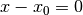. The coefficients specified are “ ”.
y-plane: A plane perpendicular to the y axis, i.e. a surface of the form 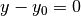. The coefficients specified are “ ”.
z-plane: A plane perpendicular to the z axis, i.e. a surface of the form 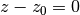. The coefficients specified are “ ”.
plane: An arbitrary plane of the form . The coefficients specified are “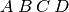”.
x-cylinder: An infinite cylinder whose length is parallel to the x-axis. This is a quadratic surface of the form 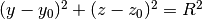. The coefficients specified are “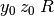”. y-cylinder: An infinite cylinder whose length is parallel to the y-axis. This is a quadratic surface of the form . The coefficients specified are “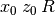”.
z-cylinder: An infinite cylinder whose length is parallel to the z-axis. This is a quadratic surface of the form 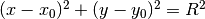. The coefficients specified are “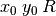”. sphere: A sphere of the form . The coefficients specified are “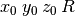”.
x-cone: A cone parallel to the x-axis of the form . The coefficients specified are “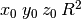”.
y-cone: A cone parallel to the y-axis of the form 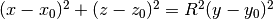. The coefficients specified are “”. z-cone: A cone parallel to the x-axis of the form . The coefficients specified are “”.
3.3.2. <cell> Element¶
Each <cell> element can have the following attributes or sub-elements:
id: A unique integer that can be used to identify the surface.
Default: None
universe: The id of the universe that this cell is contained in.
Default: 0
fill: The id of the universe that fills this cell.
Note
If a fill is specified, no material should be given.
Default: None
material: The id of the material that this cell contains. If the cell should contain no material, this can also be set to “void”.
Note
If a material is specified, no fill should be given.
Default: None
surfaces: A list of the ids for surfaces that bound this cell, e.g. if the cell is on the negative side of surface 3 and the positive side of surface 5, the bounding surfaces would be given as “-3 5”.
Default: None
rotation: If the cell is filled with a universe, this element specifies the angles in degrees about the x, y, and z axes that the filled universe should be rotated. Should be given as three real numbers. For example, if you wanted to rotate the filled universe by 90 degrees about the z-axis, the cell element would look something like:
<cell fill="..." rotation="0 0 90" />Default: None
translation: If the cell is filled with a universe, this element specifies a vector that is used to translate (shift) the universe. Should be given as three real numbers.
Note
Any translation operation is applied after a rotation, if also specified.
Default: None
3.3.3. <lattice> Element¶
The <lattice> can be used to represent repeating structures (e.g. fuel pins in an assembly) or other geometry which naturally fits into a two- or three-dimensional structured mesh. Each cell within the lattice is filled with a specified universe. A <lattice> accepts the following attributes or sub-elements:
id: A unique integer that can be used to identify the surface.
type: A string indicating the arrangement of lattice cells. Currently, the only accepted option is “rectangular”.
Default: rectangular
dimension: Two or three integers representing the number of lattice cells in the x- and y- (and z-) directions, respectively.
Default: None
lower_left: The coordinates of the lower-left corner of the lattice. If the lattice is two-dimensional, only the x- and y-coordinates are specified.
Default: None
width: The width of the lattice cell in the x- and y- (and z-) directions.
Default: None
outside: The unique integer identifier of a material that is to be used to fill all space outside of the lattice. This element is optional.
Default: The region outside the defined lattice is treated as void.
universes: A list of the universe numbers that fill each cell of the lattice.
Default: None
3.4. Materials Specification – materials.xml¶
3.4.1. <material> Element¶
Each material element can have the following attributes or sub-elements:
id: A unique integer that can be used to identify the material.
density: An element with attributes/sub-elements called value and units. The value attribute is the numeric value of the density while the units can be “g/cm3”, “kg/m3”, “atom/b-cm”, “atom/cm3”, or “sum”. The “sum” unit indicates that the density should be calculated as the sum of the atom fractions for each nuclide in the material. This should not be used in conjunction with weight percents.
Default: None
nuclide: An element with attributes/sub-elements called name, xs, and ao or wo. The name attribute is the name of the cross-section for a desired nuclide while the xs attribute is the cross-section identifier. Finally, the ao and wo attributes specify the atom or weight percent of that nuclide within the material, respectively. One example would be as follows:
<nuclide name="H-1" xs="70c" ao="2.0" /> <nuclide name="O-16" xs="70c" ao="1.0" />Note
If one nuclide is specified in atom percent, all others must also be given in atom percent. The same applies for weight percentages.
Default: None
element: Specifies that a natural element is present in the material. The natural element is split up into individual isotopes based on IUPAC Isotopic Compositions of the Elements 1997. This element has attributes/sub-elements called name, xs, and ao. The name attribute is the atomic symbol of the element while the xs attribute is the cross-section identifier. Finally, the ao attribute specifies the atom percent of the element within the material, respectively. One example would be as follows:
<element name="Al" ao="8.7115e-03" /> <element name="Mg" ao="1.5498e-04" /> <element name="Mn" ao="2.7426e-05" /> <element name="Cu" ao="1.6993e-04" />Default: None
sab: Associates an S(a,b) table with the material. This element has attributes/sub-elements called name and xs. The name attribute is the name of the S(a,b) table that should be associated with the material, and xs is the cross-section identifier for the table.
Default: None
3.4.2. <default_xs> Element¶
In some circumstances, the cross-section identifier may be the same for many or all nuclides in a given problem. In this case, rather than specifying the xs=... attribute on every nuclide, a <default_xs> element can be used to set the default cross-section identifier for any nuclide without an identifier explicitly listed. This element has no attributes and accepts a 3-letter string that indicates the default cross-section identifier, e.g. “70c”.
Default: None
3.5. Tallies Specification – tallies.xml¶
The tallies.xml file allows the user to tell the code what results he/she is interested in, e.g. the fission rate in a given cell or the current across a given surface. There are two pieces of information that determine what quantities should be scored. First, one needs to specify what region of phase space should count towards the tally and secondly, the actual quantity to be scored also needs to be specified. The first set of parameters we call filters since they effectively serve to filter events, allowing some to score and preventing others from scoring to the tally.
The structure of tallies in OpenMC is flexible in that any combination of filters can be used for a tally. The following types of filter are available: cell, universe, material, surface, birth region, pre-collision energy, post-collision energy, and an arbitrary structured mesh.
The three valid elements in the tallies.xml file are <tally>, <mesh>, and <assume_separate>.
3.5.1. <tally> Element¶
The <tally> element accepts the following sub-elements:
label: This is an optional sub-element specifying the name of this tally to be used for output purposes. This string is limited to 52 characters for formatting purposes.
filter: Specify a filter that restricts contributions to the tally to particles within certain regions of phase space. This element and its attributes/sub-elements are described below.
Note
You may specify zero, one, or multiple filters to apply to the tally. To specify multiple filters, you must use multiple <filter> elements.
The filter element has the following attributes/sub-elements:
type: The type of the filter. Accepted options are “cell”, “cellborn”, “material”, “universe”, “energy”, “energyout”, and “mesh”.
bins: For each filter type, the corresponding bins entry is given as follows:
cell: A list of cells in which the tally should be accumulated. cellborn: This filter allows the tally to be scored to only when particles were originally born in a specified cell. surface: A list of surfaces for which the tally should be accumulated. material: A list of materials for which the tally should be accumulated. universe: A list of universes for which the tally should be accumulated. energy: A monotonically increasing list of bounding pre-collision energies for a number of groups. For example, if this filter is specified as <filter type="energy" bins="0.0 1.0 20.0" />, then two energy bins will be created, one with energies between 0 and 1 MeV and the other with energies between 1 and 20 MeV. energyout: A monotonically increasing list of bounding post-collision energies for a number of groups. For example, if this filter is specified as <filter type="energyout" bins="0.0 1.0 20.0" />, then two post-collision energy bins will be created, one with energies between 0 and 1 MeV and the other with energies between 1 and 20 MeV. mesh: The id of a structured mesh to be tallied over. nuclides: If specified, the scores listed will be for particular nuclides, not the summation of reactions from all nuclides. The format for nuclides should be [Atomic symbol]-[Mass number], e.g. “U-235”. The reaction rate for all nuclides can be obtained with “total”. For example, to obtain the reaction rates for U-235, Pu-239, and all nuclides in a material, this element should be:
<nuclides>U-235 Pu-239 total</nuclides>Default: total
scores: A space-separated list of the desired responses to be accumulated. Accepted options are “flux”, “total”, “scatter”, “nu-scatter”, “scatter-N”, “scatter-PN”, “absorption”, “fission”, “nu-fission”, “kappa-fission”, “current”, and “events”. These corresponding to the following physical quantities.
flux: Total flux
total: Total reaction rate
scatter: Total scattering rate. Can also be identified with the scatter-0 response type.
nu-scatter: Total production of neutrons due to scattering. This accounts for multiplicity from (n,2n), (n,3n), and (n,4n) reactions and should be slightly higher than the scattering rate.
scatter-N: Tally the Nth scattering moment, where N is the Legendre expansion order. N must be between 0 and 10. As an example, tallying the 2nd scattering moment would be specified as <scores> scatter-2 </scores>.
scatter-PN: Tally all of the scattering moments from order 0 to N, where N is the Legendre expansion order. That is, scatter-P1 is equivalent to requesting tallies of scatter-0 and scatter-1. N must be between 0 and 10. As an example, tallying up to the 2nd scattering moment would be specified as <scores> scatter-P2 </scores>.
absorption: Total absorption rate. This accounts for all reactions which do not produce secondary neutrons.
fission: Total fission rate
nu-fission: Total production of neutrons due to fission
kappa-fission: The recoverable energy production rate due to fission. The recoverable energy is defined as the fission product kinetic energy, prompt and delayed neutron kinetic energies, prompt and delayed
-ray total energies, and the total energy released by the delayed 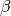 particles. The neutrino energy does not contribute to this response. The prompt and delayed
current: Partial currents on the boundaries of each cell in a mesh.
Note
This score can only be used if a mesh filter has been specified. Furthermore, it may not be used in conjunction with any other score.
events: Number of scoring events
3.5.2. <mesh> Element¶
If a structured mesh is desired as a filter for a tally, it must be specified in a separate element with the tag name <mesh>. This element has the following attributes/sub-elements:
type: The type of structured mesh. Valid options include “rectangular” and “hexagonal”. dimension: The number of mesh cells in each direction. lower_left: The lower-left corner of the structured mesh. If only two coordinates are given, it is assumed that the mesh is an x-y mesh. upper_right: The upper-right corner of the structured mesh. If only two coordinates are given, it is assumed that the mesh is an x-y mesh. width: The width of mesh cells in each direction. Note
One of <upper_right> or <width> must be specified, but not both (even if they are consistent with one another).
3.5.3. <assume_separate> Element¶
In cases where the user needs to specify many different tallies each of which are spatially separate, this tag can be used to cut down on some of the tally overhead. The effect of assuming all tallies are spatially separate is that once one tally is scored to, the same event is assumed not to score to any other tallies. This element should be followed by “true” or “false”.
Warning
If used incorrectly, the assumption that all tallies are spatially separate can lead to incorrect results.
Default: false
3.6. Geometry Plotting Specification – plots.xml¶
Basic plotting capabilities are available in OpenMC by creating a plots.xml file and subsequently running with the command-line flag -plot. The root element of the plots.xml is simply <plots> and any number output plots can be defined with <plot> sub-elements. Two plot types are currently implemented in openMC:
- slice 2D pixel plot along one of the major axes. Produces a PPM image file.
- voxel 3D voxel data dump. Produces a binary file containing voxel xyz position and cell or material id.
3.6.1. <plot> Element¶
Each plot must contain a combination of the following attributes or sub-elements:
id: The unique id of the plot.
Default: None - Required entry
filename: Filename for the output plot file.
Default: “plot”
color: Keyword for plot coloring. This can only be either cell or mat, which colors regions by cells and materials, respectively. For voxel plots, this determines which id (cell or material) is associated with each position.
Default: cell
origin: Specifies the (x,y,z) coordinate of the center of the plot. Should be three floats separated by spaces.
Default: None - Required entry
width: Specifies the width of the plot along each of the basis directions. Should be two or three floats separated by spaces for 2D plots and 3D plots, respectively.
Default: None - Required entry
type: Keyword for type of plot to be produced. Currently only “slice” and “voxel” plots are implemented. The “slice” plot type creates 2D pixel maps saved in the PPM file format. PPM files can be displayed in most viewers (e.g. the default Gnome viewer, IrfanView, etc.). The “voxel” plot type produces a binary datafile containing voxel grid positioning and the cell or material (specified by the color tag) at the center of each voxel. These datafiles can be processed into 3D SILO files using the voxel.py utility provided with the OpenMC source, and subsequently viewed with a 3D viewer such as VISIT or Paraview. See the Voxel Plot Binary File Specifications for information about the datafile structure.
Note
Since the PPM format is saved without any kind of compression, the resulting file sizes can be quite large. Saving the image in the PNG format can often times reduce the file size by orders of magnitude without any loss of image quality. Likewise, high-resolution voxel files produced by OpenMC can be quite large, but the equivalent SILO files will be significantly smaller.
Default: “slice”
<plot> elements of type “slice” and “voxel” must contain the pixels attribute or sub-element:
pixels: Specifies the number of pixes or voxels to be used along each of the basis directions for “slice” and “voxel” plots, respectively. Should be two or three integers separated by spaces.
Warning
The pixels input determines the output file size. For the PPM format, 10 million pixels will result in a file just under 30 MB in size. A 10 million voxel binary file will be around 40 MB.
Warning
If the aspect ratio defined in pixels does not match the aspect ratio defined in width the plot may appear stretched or squeezed.
Warning
Geometry features along a basis direction smaller than width/pixels along that basis direction may not appear in the plot.
Default: None - Required entry for “slice” and “voxel” plots
<plot> elements of type “slice” can also contain the following attributes or sub-elements. These are not used in “voxel” plots:
basis: Keyword specifying the plane of the plot for “slice” type plots. Can be one of: “xy”, “xz”, “yz”.
Default: “xy”
background: Specifies the RGB color of the regions where no OpenMC cell can be found. Should be three integers separated by spaces.
Default: 0 0 0 (white)
col_spec: Any number of this optional tag may be included in each <plot> element, which can override the default random colors for cells or materials. Each col_spec element must contain id and rgb sub-elements.
id: Specifies the cell or material unique id for the color specification. rgb: Specifies the custom color for the cell or material. Should be 3 integers separated by spaces. As an example, if your plot is colored by material and you want material 23 to be blue, the corresponding col_spec element would look like:
<col_spec id="23" rgb="0 0 255" />Default: None
mask: The special mask sub-element allows for the selective plotting of only user-specified cells or materials. Only one mask element is allowed per plot element, and it must contain as attributes or sub-elements a background masking color and a list of cells or materials to plot:
components: List of unique id numbers of the cells or materials to plot. Should be any number of integers separated by spaces. background: Color to apply to all cells or materials not in the components list of cells or materials to plot. This overrides any col_spec color specifications. Default: None
3.7. CMFD Specification – cmfd.xml¶
Coarse mesh finite difference acceleration method has been implemented in OpenMC. Currently, it allows users to accelerate fission source convergence during inactive neutron batches. To run CMFD, the <run_cmfd> element in settings.xml should be set to “true”.
3.7.1. <active_flush> Element¶
The <active_flush> element controls the batch where CMFD tallies should be reset. CMFD tallies should be reset before active batches so they are accumulated without bias.
Default: 0
3.7.2. <begin> Element¶
The <begin> element controls what batch CMFD calculations should begin.
Default: 1
3.7.3. <display> Element¶
The <display> element sets one additional CMFD output column. Options are:
“balance” - prints the RMS [%] of the resdiual from the neutron balance equation on CMFD tallies.
“dominance” - prints the estimated dominance ratio from the CMFD iterations. This will only work for power iteration eigensolver.
“entropy” - prints the entropy of the CMFD predicted fission source. Can only be used if OpenMC entropy is active as well.
“source” - prints the RMS [%] between the OpenMC fission source and CMFD fission source.
Default: None
3.7.4. <feedback> Element¶
The <feedback> element controls whether or not the CMFD diffusion result is used to adjust the weight of fission source neutrons on the next OpenMC batch. It can be turned on with “true” and off with “false”.
Default: false
3.7.5. <inactive> Element¶
The <inactive> element controls if cmfd tallies should be accumulated during inactive batches. For some applications, CMFD tallies may not be needed until the start of active batches. This option can be turned on with “true” and off with “false”
Default: true
3.7.6. <inactive_flush> Element¶
The <inactive_flush> element controls when CMFD tallies are reset during inactive batches. The integer set here is the interval at which this reset occurs. The amout of resets is controlled with the <num_flushes> element.
Defualt: 9999
3.7.7. <ksp_monitor> Element¶
The <ksp_monitor> element is used to view the convergence of linear GMRES iterations in PETSc. This option can be turned on with “true” and turned off with “false”.
Default: false
3.7.8. <mesh> Element¶
The CMFD mesh is a structured Cartesian mesh. This element has the following attributes/sub-elements:
lower_left: The lower-left corner of the structured mesh. If only two coordinate are given, it is assumed that the mesh is an x-y mesh.
upper_right: The upper-right corner of the structrued mesh. If only two coordinate are given, it is assumed that the mesh is an x-y mesh.
dimension: The number of mesh cells in each direction.
width: The width of mesh cells in each direction.
energy: Energy bins [in MeV], listed in ascending order (e.g. 0.0 0.625e-7 20.0) for CMFD tallies and acceleration. If no energy bins are listed, OpenMC automatically assumes a one energy group calculation over the entire energy range.
albedo: Surface ratio of incoming to outgoing partial currents on global boundary conditions. They are listed in the following order: -x +x -y +y -z +z.
Default: 1.0 1.0 1.0 1.0 1.0 1.0
map: An optional acceleration map can be specified to overlay on the coarse mesh spatial grid. If this option is used a 1 is used for a non-accelerated region and a 2 is used for an accelerated region. For a simple 4x4 coarse mesh with a 2x2 fuel lattice surrounded by reflector, the map is:
1 1 1 1
1 2 2 1
1 2 2 1
1 1 1 1
Therefore a 2x2 system of equations is solved rather than a 4x4. This is extremely important to use in reflectors as neutrons will not contribute to any tallies far away from fission source neutron regions. A 2 must be used to identify any fission source region.
Note
Only two of the following three sub-elements are needed: lower_left, upper_right and width. Any combination of two of these will yield the third.
3.7.9. <norm> Element¶
The <norm> element is used to normalize the CMFD fission source distribution to a particular value. For example, if a fission source is calculated for a 17 x 17 lattice of pins, the fission source may be normalized to the number of fission source regions, in this case 289. This is useful when visualizing this distribution as the average peaking factor will be unity. This parameter will not impact the calculation.
Default: 1.0
3.7.10. <num_flushes> Element¶
The <num_flushes> element controls the number of CMFD tally resets that occur during inactive CMFD batches.
Default: 9999
3.7.11. <power_monitor> Element¶
The <power_monitor> element is used to view the convergence of power iteration. This option can be turned on with “true” and turned off with “false”.
Default: false
3.7.12. <run_adjoint> Element¶
The <run_adjoint> element can be turned on with “true” to have an adjoint calculation be performed on the last batch when CMFD is active.
Default: false
3.7.13. <snes_monitor> Element¶
The <snes_monitor> element is used to view the convergence of the nonlinear SNES function in PETSc. This option can be turned on with “true” and turned off with “false”.
Default: false
3.7.14. <solver> Element¶
The <solver> element controls whether the CMFD eigenproblem is solved with standard power iteration or nonlinear Jacobian-free Newton Krylov (JFNK). By setting “power”, power iteration is used and by setting “jfnk”, JFNK is used.
Default: power
3.7.15. <write_matrices> Element¶
The <write_matrices> element is used to view the PETSc sparse matrices created when solving CMFD equations. These binary output files can be imported into MATLAB using PETSc-MATLAB utilities. This option can be turned on with “true” and off with “false”.
Default: false